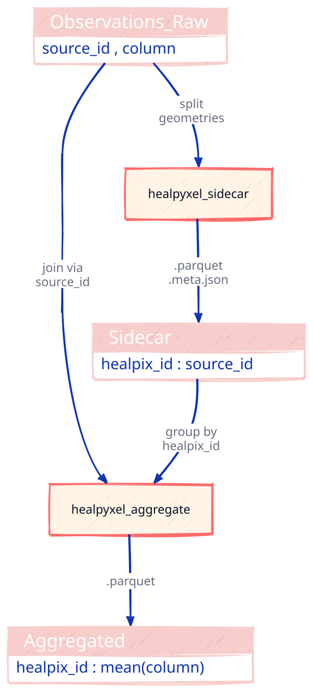
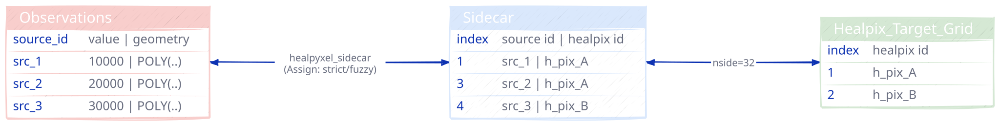
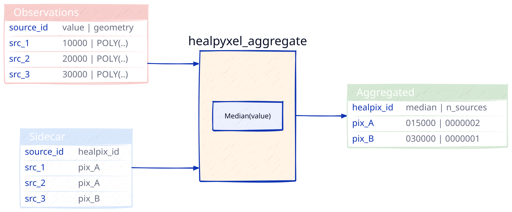
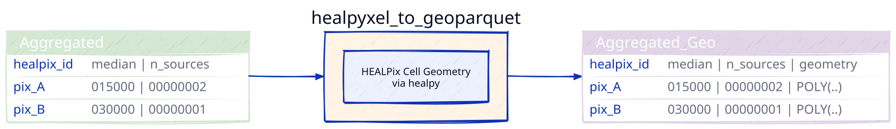
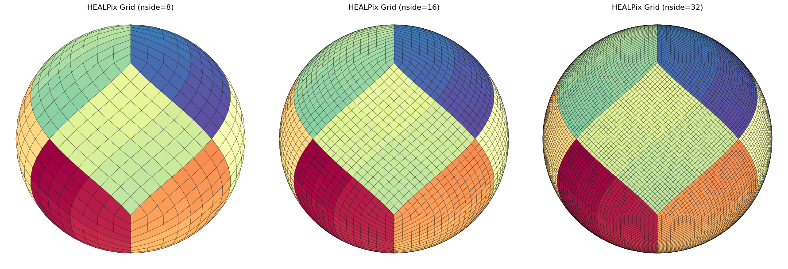

Healpyxel
HEALPyxel — HEALPix-based spatial aggregation for planetary science data.
Overview
This project provides HEALPix-based spatial aggregation for planetary science data, with streaming accumulation, sidecar generation, and batch aggregation capabilities.
What You’ll Learn
Start with the linear path below if you are new to healpyxel:
- Core concepts tutorial — HEALPix basics, sidecar generation, aggregation
- Full workflow tutorial — end-to-end pipeline with visualizations
- Sphere-native sidecar tutorial — great-circle SLERP, antimeridian-safe cells
The API reference is best used after the tutorial path above.
Start Here
- Core concepts tutorial — the fastest way to get started.
- Full workflow tutorial — complete pipeline with plots.
Install
The repository root README.md has the installation and local setup instructions, including optional dependencies.
Workflow
- Sidecar — assign MESSENGER/MASCS observations to HEALPix cells with PSF-weighted geometry
- Aggregate — batch sidecar outputs into per-cell statistics
- Accumulate — stream incremental updates with TDigest percentiles and fuzzy mode
- Finalize — densify maps, export to GeoTIFF, and embed metadata
What is HEALPix?
HEALPix (Hierarchical Equal Area isoLatitude Pixelization) is a standard for partitioning a sphere (like a planet or the sky) into pixels of equal surface area.
Unlike traditional “rectangular” map projections (like Equirectangular or Mercator), HEALPix ensures that:
- Every pixel is the same size: Statistical analysis remains valid across the entire globe, including the poles.
- It is Hierarchical: You can easily increase or decrease resolution (\(NSIDE\)) while maintaining spatial relationships.
- Fast Computation: Its structure allows for extremely efficient neighbor searches and spherical harmonic transforms.
Some useful links:
- HEALPix - Wikipedia
- LandscapeGeoinformatics/Awesome Discrete Global Grid Systems (DGGS)
- pangeo-data/awesome-HEALPix: A curated list of awesome HEALPix libraries, tools, and resources.
The Problem: Data Distortion & Scale
In planetary science, data often arrives as scattered points, tracks, or footprints from spectrometers and altimeters. Traditionally, researchers face two major hurdles:
- Projection Bias: Standard grids distort the poles, making global surface calculations (like mean chemical abundance or crater density) mathematically biased.
- The Memory Wall: Modern missions generate billions of points. Loading an entire global high-resolution map into RAM to update it is often impossible.
healpyxel solves this by treating the sphere as a modern data engineering target rather than just a geometric grid.
Design Philosophy & Use Cases
healpyxel is built on the Unix Philosophy: do one thing and do it well, using a decoupled, chainable structure. It treats HEALPix indexing as a data-engineering problem rather than just a geometric one.
This package relies heavily on healpy.
astropy also have a contributed module to handle those grids called astropy_healpix.
Who is this for?
This package is ideal for researchers and data engineers working with sparse, irregular, or streaming planetary and astronomical datasets.
- Remote Sensing & Planetary Science: Specifically designed for instruments like 1-point spectrometers (e.g., MESSENGER/MASCS), laser altimeters, and push-broom spectrometers.
- The “Sidecar” Workflow: Index your data without modifying the original source files.
healpyxelcreates lightweight “sidecar” files that map your GeoParquet rows to HEALPix cells. - Large-Scale Data Engineering: Process TB-scale datasets using a Split-Apply-Combine approach on GeoParquet.
- Streaming & Incremental Ingestion: Update global maps as new data arrives without reprocessing the entire historical archive.
🛑 Who is this NOT for?
You might consider alternatives if your use case falls into these categories:
- High-Resolution 2D Imagery: For dense image-to-HEALPix re-projection (e.g., CCD frames), tools like reproject or astropy-healpix are more suitable.
- Standard Xarray/Dask Unstructured Grids: For deep integration with general unstructured meshes beyond HEALPix, use UXarray.
- Multi-order Coverage (MOC) & LIGO workflows: For specific gravitational wave IO formats, check out mhealpy.
How it Works: The “Sidecar” Strategy
healpyxel implements a Split-Apply-Combine pattern tailored for spherical geometry:
- Split (The Sidecar): Instead of rewriting your heavy raw data,
healpyxelgenerates a small Parquet file containing only theindexof the original data and its correspondinghealpix_id. - Apply (Aggregation): Join this sidecar with any column in your original dataset to calculate statistics (Mean, Std Dev, Count) per cell.
- Combine (The Map): Results are combined into a final HEALPix map or a streaming accumulator.
💡 Pro-Tip: For multiple pixels sensors (e.g. push-broom spectrometer), flatten your 2D acquisitions into a 1D tabular format (one row per spatial pixel) before saving to GeoParquet. healpyxel is optimized to ingest these “shredded” lines at high speed.
Installation
This works if you have a working requires C/C++ toolchain (cfitsio, HEALPix C++ library), I have no way to builts wheels for Windows, see below for workarounds.
pip install healpyxelOptional Dependencies
# For geospatial operations (sidecar generation)
pip install healpyxel[geospatial]
# For streaming/incremental statistics (accumulator)
pip install healpyxel[streaming]
# For visualization (maps, plots)
pip install healpyxel[viz]
# Development tools (nbdev, testing, linting)
pip install healpyxel[dev]
# All optional dependencies
pip install healpyxel[all]Windows Users workarounds:
- Option 1: Use conda (RECOMMENDED)
conda install -c conda-forge healpy
pip install healpyxelConda-forge provides prebuilt Windows binaries.
- Option 2: WSL2 (Windows Subsystem for Linux)
# In WSL2 Ubuntu
pip install healpyxelExtras breakdown: - geospatial: geopandas, shapely, dask-geopandas, antimeridian (required for healpyxel_sidecar) - streaming: tdigest (percentile tracking in healpyxel_accumulator) - viz: matplotlib, scikit-image, skyproj (mapping workflows) - dev: All of the above + nbdev, pytest, black, ruff, mypy - all: Installs geospatial + streaming + viz (excludes dev tools)
Quick Start
The healpyxel workflow implements spatial aggregation using three core steps:
- Split: Map observations to HEALPix cells
healpyxel_sidecar - and 3. Apply+Combine: Aggregate values per HEALPix cell
healpyxel_aggregate

1. Split: Map observations to HEALPix cells
You start with observation data (GeoParquet): geometries + values per record. A sidecar file links each observation (source_id) to HEALPix cells at your target resolution (nside).
Data contract:
- Input:
observations.parquet→ columns:source_id,value,geometry - Output:
observations-sidecar.parquet→ columns:source_id,healpix_id,weight(fuzzy mode only)
CLI: healpyxel_sidecar --input observations.parquet --nside 64 128 --mode fuzzy

2. Apply + Combine: Aggregate values per HEALPix cell
Group all observations assigned to the same cell and compute statistics (median, mean, MAD, robust_std, etc.).
Data contract:
- Input:
observations.parquet+ sidecar file - Output:
observations-aggregated.parquet→ columns:healpix_id,value_median,value_robust_std, …
CLI: healpyxel_aggregate --input observations.parquet --sidecar-dir output/ --columns value --aggs median robust_std

Optional : Attach HEALPix cell geometry
Add polygon boundaries to aggregated cells (computed from healpix_id via healpy).
Resulting GeoParquet files can be direclty imported in QGIS and other GIS programs.
Data contract:
- Input:
observations-aggregated.parquet - Output:
observations-aggregated.geo.parquet→ adds column:geometry(HEALPix cell polygon)
CLI: healpyxel_to_geoparquet --aggregate-path observations-aggregated.parquet --output-dir output/

Optional: Cache geometries
Pre-compute HEALPix cell boundaries for faster repeated use (especially for high nside). This example create the 8,16 and 36 grid and convert the cached files to geoparquet that geopandas can directly read and visualize.
CLI:
# create the grids
healpyxel_cache --nside 8 16 32 --order nested --lon-convention 0_360
# list them
healpyxel_cache --list
Cache directory: $XDG_HOME/.cache/healpyxel/healpix_grids
Cached grids (7):
nside_008_nest_spherical.parquet 768 cells 0.0 MB
nside_016_nest_spherical.parquet 3072 cells 0.1 MB
nside_032_nest_spherical.parquet 12288 cells 0.2 MB
# create geoparquet versions, store in tmp
for grid in $HOME/.cache/healpyxel/healpix_grids/*
do
echo "processin $grid file"
healpyxel_to_geoparquet -a $grid -d /tmp/ -l -180_180 -f
doneminimal python example to read plot one of those:
import geopandas as gpd
import cartopy.crs as ccrs
projection = ccrs.Orthographic(central_longitude=0, central_latitude=0)
fig, ax = plt.subplots(figsize=(10, 10))
gdf_projected_8.plot(
column=gdf.index, # Color by healpix_id
cmap='Spectral_r',
legend=False,
edgecolor='black',
linewidth=0.8,
ax=ax
)
ax.set_aspect('equal')
Batch Processing
see below
# 1. Generate HEALPix sidecar (SPLIT)
healpyxel_sidecar \
--input observations.parquet \
--nside 64 128 \
--mode fuzzy \
--output-dir output/
# 2. Aggregate by HEALPix cells (APPLY)
healpyxel_aggregate \
--input observations.parquet \
--sidecar-dir output/ \
--sidecar-index 0 \
--aggregate \
--columns r750 r950 \
--aggs median robust_std \
--min-count 3
# 3. Convert to GeoParquet (for visualization)
healpyxel_to_geoparquet \
--aggregate-path output/observations-aggregated.*.parquet \
--output-dir output/ \
--lon-convention -180_180
# 4. Cache HEALPix geometry (optional, speeds up visualization)
healpyxel_cache --nside 64 128 --order nested --lon-convention 0_360Streaming Processing - WORK IN PROGRESS
# Day 1: Initialize accumulator
healpyxel_accumulate --input day001.parquet \
--columns r750 r950 --state-output state_v001.parquet
# Day 2+: Incremental updates
healpyxel_accumulate --input day002.parquet \
--columns r750 r950 \
--state-input state_v001.parquet --state-output state_v002.parquet
# Finalize to statistics
healpyxel_finalize --state state_v030.parquet --output mosaic.parquet \
--percentiles 25 50 75 --densify --nside 512CLI Workflow
This section explan a full CLI workflow on a test sample 50k data, including the outputs produced at each stage.
The same workflow is done completely in python with healpyxel API in Examples>Visualization section.
All input/output are in this repsitory:
- script is at examples/cli_regrid_sample_50k.sh
- input are at test_data/samples/sample_50k.parquet
- ouput are in test_data/derived/cli_quickstart
| lat_center | lon_center | ang_incidence | ang_emission | ang_phase | azimuth | geometry | |
|---|---|---|---|---|---|---|---|
| 0 | 5.186568 | 272.40450 | 43.049232 | 34.814793 | 77.85916 | 109.019295 | b'\x01\x03\x00\x00\x00\x01\x00\x00\x00\x05\x00... |
| 1 | -60.939438 | 71.77686 | 64.178116 | 37.690910 | 101.84035 | 111.930336 | b'\x01\x03\x00\x00\x00\x01\x00\x00\x00\x05\x00... |
| 2 | 5.613894 | 54.23045 | 53.815990 | 24.053764 | 77.86254 | 99.559425 | b'\x01\x03\x00\x00\x00\x01\x00\x00\x00\x05\x00... |
| 3 | -41.672714 | 324.49740 | 52.841824 | 46.625698 | 99.40995 | 121.833626 | b'\x01\x03\x00\x00\x00\x01\x00\x00\x00\x05\x00... |
Sidecar Metadata:
Unique sources: 49988
Unique HEALPix cells: 10870
Total assignments: 55113
Sidecar Data:| source_id | healpix_id | weight | |
|---|---|---|---|
| 0 | 0 | 7943 | 1.0 |
| 1 | 1 | 8287 | 1.0 |
| 2 | 2 | 5819 | 1.0 |
| 3 | 3 | 11685 | 1.0 |
| 4 | 4 | 3618 | 1.0 |
| 5 | 5 | 3805 | 1.0 |
| 6 | 6 | 9522 | 1.0 |
| 7 | 7 | 10975 | 1.0 |
| 8 | 8 | 1820 | 1.0 |
| 9 | 9 | 3710 | 1.0 |
1) Create HEALPix sidecar(s)
Those files link each row in the input parquet file to the HEALPix cells at the requested nside resolution; see Useful Healpix data for Moon Venus Mercury for some cells data. Refer to healpyxel_sidecar --help for full options. The --mode flag is especially important: - fuzzy: assign each input record to every cell it touches - strict: assign only records fully contained within a cell
healpyxel_sidecar \
--input "test_data/samples/sample_50k.parquet" \
--nside 32 64 \
--mode fuzzy \
--lon-convention 0_360 \
--output_dir "test_data/derived/cli_quickstart"Outputs
- sample_50k.cell-healpix_assignment-fuzzy_nside-32_order-nested.parquet
- sample_50k.cell-healpix_assignment-fuzzy_nside-32_order-nested.meta.json
- sample_50k.cell-healpix_assignment-fuzzy_nside-64_order-nested.parquet
- sample_50k.cell-healpix_assignment-fuzzy_nside-64_order-nested.meta.json
Nside 32: 55113 assignments, 10870 unique cells| source_id | healpix_id | weight | |
|---|---|---|---|
| 0 | 0 | 7943 | 1.0 |
| 1 | 1 | 8287 | 1.0 |
| 2 | 2 | 5819 | 1.0 |
| 3 | 3 | 11685 | 1.0 |
| 4 | 4 | 3618 | 1.0 |

2) Aggregate sparse regridded map(s)
Now we need to aggregate initial data on the cells, refer to healpyxel_aggregate --help for all the option. Some flag are particurarly useful:
--schema: show input parquet schema, useful to look which data are there to aggregate.--list-sidecars: list available sidecar for an input files, they are addressed by index.--sidecar-schema INDEX: show schema for specific sidecar file--aggs mean: aggregation functions (choices: mean, median, std, min, max, mad, robust_std).
Example :
- input file contains columns A (you can check it with
healpyxel_aggregate -i input --schema) --agg mean median std- this produce un output the columns
A_mean,A_medianandA_stdcreated appling those function on all input files rows listd in the sidecar file for a single HEALPix cell
healpyxel_aggregate \
--input "test_data/samples/sample_50k.parquet" \
--sidecar-dir "test_data/derived/cli_quickstart" \
--sidecar-index all \
--aggregate \
--columns r1050 \
--aggs mean median std mad robust_std \This produces sparse output : only cells with actual values are written in ouput.
Outputs - sample_50k-aggregated.cell-healpix_assignment-fuzzy_nside-32_order-nested.parquet - sample_50k-aggregated.cell-healpix_assignment-fuzzy_nside-32_order-nested.meta.json - sample_50k-aggregated.cell-healpix_assignment-fuzzy_nside-64_order-nested.parquet - sample_50k-aggregated.cell-healpix_assignment-fuzzy_nside-64_order-nested.meta.json
Nside 32: 10870 unique cells| r1050_mean | r1050_median | r1050_std | r1050_mad | r1050_robust_std | n_sources | |
|---|---|---|---|---|---|---|
| healpix_id | ||||||
| 0 | 0.048616 | 0.047857 | 0.003759 | 0.002672 | 0.003962 | 4 |
| 1 | 0.051467 | 0.052283 | 0.002976 | 0.001888 | 0.002799 | 6 |
| 2 | 0.049697 | 0.049118 | 0.003637 | 0.002289 | 0.003394 | 6 |
| 3 | 0.059066 | 0.063241 | 0.007149 | 0.001711 | 0.002537 | 3 |
| 4 | 0.051262 | 0.051523 | 0.006552 | 0.002510 | 0.003721 | 9 |
3) Aggregate densified regridded map(s)
healpyxel_aggregate \
--input "test_data/samples/sample_50k.parquet" \
--sidecar-dir "test_data/derived/cli_quickstart" \
--sidecar-index all \
--aggregate \
--columns r1050 \
--aggs mean median std mad robust_std \
--densifyThis produces dense output : all HEALPix cells are writeen in ouput, empty one as filled with Nan.
Outputs
- sample_50k-aggregated-densified.cell-healpix_assignment-fuzzy_nside-32_order-nested.parquet
- sample_50k-aggregated-densified.cell-healpix_assignment-fuzzy_nside-32_order-nested.meta.json
- sample_50k-aggregated-densified.cell-healpix_assignment-fuzzy_nside-64_order-nested.parquet
- sample_50k-aggregated-densified.cell-healpix_assignment-fuzzy_nside-64_order-nested.meta.json
Nside 32: 12288 unique cells <- densified, 1418 additional empty cells| r1050_mean | r1050_median | r1050_std | r1050_mad | r1050_robust_std | n_sources | |
|---|---|---|---|---|---|---|
| healpix_id | ||||||
| 29 | 0.046644 | 0.046644 | 0.000000 | 0.000000 | 0.000000 | 1.0 |
| 30 | NaN | NaN | NaN | NaN | NaN | NaN |
| 31 | 0.040205 | 0.040986 | 0.009636 | 0.007137 | 0.010581 | 4.0 |
| 32 | 0.054966 | 0.054413 | 0.003162 | 0.002148 | 0.003184 | 8.0 |
| 33 | 0.054424 | 0.055591 | 0.004131 | 0.003358 | 0.004979 | 8.0 |
| 34 | 0.057463 | 0.057463 | 0.001704 | 0.001704 | 0.002526 | 2.0 |
| 35 | 0.050470 | 0.057635 | 0.017546 | 0.004688 | 0.006951 | 4.0 |
| 36 | 0.054052 | 0.053640 | 0.004915 | 0.002833 | 0.004200 | 6.0 |
| 37 | 0.056132 | 0.056019 | 0.002281 | 0.002128 | 0.003155 | 4.0 |
| 38 | 0.060452 | 0.060592 | 0.002127 | 0.001878 | 0.002784 | 4.0 |
| 39 | 0.060708 | 0.070030 | 0.014303 | 0.001562 | 0.002316 | 3.0 |
| 40 | 0.041480 | 0.041480 | 0.000000 | 0.000000 | 0.000000 | 1.0 |
| 41 | 0.028736 | 0.028736 | 0.000000 | 0.000000 | 0.000000 | 1.0 |
| 42 | 0.070738 | 0.070655 | 0.009835 | 0.011921 | 0.017674 | 3.0 |
| 43 | 0.062058 | 0.061658 | 0.009862 | 0.008409 | 0.012467 | 8.0 |
| 44 | NaN | NaN | NaN | NaN | NaN | NaN |
| 45 | 0.053895 | 0.054106 | 0.001107 | 0.001026 | 0.001521 | 3.0 |
4) Convert aggregated maps to GeoParquet
This convert each aggregated file to a geoparquet.
for f in "test_data/derived/cli_quickstart"/*-aggregated*parquet; do
healpyxel_to_geoparquet -a "$f" -d "test_data/derived/cli_quickstart" -l -180_180 -f
doneOutputs
- sample_50k-aggregated-densified.cell-healpix_assignment-fuzzy_nside-32_order-nested.geo.parquet
- sample_50k-aggregated-densified.cell-healpix_assignment-fuzzy_nside-64_order-nested.geo.parquet
- sample_50k-aggregated.cell-healpix_assignment-fuzzy_nside-32_order-nested.geo.parquet
- sample_50k-aggregated.cell-healpix_assignment-fuzzy_nside-64_order-nested.geo.parquet
Nside 32: 10860 unique cells| geometry | r1050_mean | r1050_median | r1050_std | r1050_mad | r1050_robust_std | n_sources | |
|---|---|---|---|---|---|---|---|
| healpix_id | |||||||
| 0 | POLYGON ((45 2.38802, 43.59375 1.19375, 45 0, ... | 0.048616 | 0.047857 | 0.003759 | 0.002672 | 0.003962 | 4 |
| 1 | POLYGON ((46.40625 3.58332, 45 2.38802, 46.406... | 0.051467 | 0.052283 | 0.002976 | 0.001888 | 0.002799 | 6 |
| 2 | POLYGON ((43.59375 3.58332, 42.1875 2.38802, 4... | 0.049697 | 0.049118 | 0.003637 | 0.002289 | 0.003394 | 6 |
| 3 | POLYGON ((45 4.78019, 43.59375 3.58332, 45 2.3... | 0.059066 | 0.063241 | 0.007149 | 0.001711 | 0.002537 | 3 |
| 4 | POLYGON ((47.8125 4.78019, 46.40625 3.58332, 4... | 0.051262 | 0.051523 | 0.006552 | 0.002510 | 0.003721 | 9 |
Each cell is linked to some initial observation via the sidecar file, we can see here the distribution of one value in all the cell

We can visualize each pixel with one of the aggregator function output available in healpyxel_aggregate :
mean: Arithmetic meanmedian: Median (50th percentile)std: Standard deviationmin: Minimum valuemax: Maximum valuemad: Median Absolute Deviation (robust to outliers)robust_std: MAD × 1.4826 (equivalent to standard deviation for normal distributions, robust to outliers)
Each function generates one output column per input value column, named <column>_<agg> (e.g., r1050_mean, r1050_median, r1050_mad). Robust statistics (mad, robust_std) are recommended for outlier-prone datasets.
Text(77.20833333333334, 0.5, 'Latitude')Original data plot and matching Healpix grid cells clored by average

Python workflow API
healpyxel.workflow.run_pipeline() wraps the three CLI stages into a single Python call and (optionally) prints/logs the equivalent CLI commands. It uses .meta.json files to avoid redundant work and auto-discovers numeric columns via pyarrow.
from pathlib import Path
from healpyxel.workflow import run_pipeline
# Run full pipeline — columns auto-discovered, verbose shows CLI commands
results = run_pipeline(
input=Path("test_data/samples/sample_50k.parquet"),
output_dir=Path("test_data/derived/cli_quickstart"),
nsides=(32, 64, 128),
aggs=("mean", "median", "std", "robust_std"),
verbose=True,
)
# Partial override: change aggregations for this run only
results = run_pipeline(
input=Path("test_data/samples/sample_50k.parquet"),
output_dir=Path("healpix/"),
nsides=(32, 64),
# sidecar_kwargs: forwarded to healpyxel_sidecar
sidecar_kwargs={"mode": "strict", "lon_col": "lon_center"},
# aggregate_kwargs: forwarded to healpyxel_aggregate
aggregate_kwargs={
"aggs": ("median", "mad"),
"min_count": 2,
"columns": ("r1050", "thermal"),
},
log=open("pipeline.log", "w"),
verbose=True,
)See API reference → workflow.run_pipeline for the full parameter list.
Python API
Minimal end-to-end python API example, each level works on previous one output.
initial data→sidecar: generate data <> healpix grid connections →aggregate→attach geometry→accumulate→finalize
minimal code, a more detailed explanation is in Examples>Visualization section.
Developed for MESSENGER/MASCS
This package was developed to process spectral observations from the MESSENGER/MASCS instrument studying Mercury’s surface. The workflow handles:
- Millions of observations with complex footprint geometries
- Multi-spectral reflectance data (VIS + NIR)
- Streaming data from ongoing missions
- Native resolution mosaics (sub-footprint sampling)
While designed for MASCS, healpyxel is general-purpose and works with any planetary science dataset in GeoParquet format.
HEALPix Cell Sizes: Mercury, Moon, Venus
The table below shows how HEALPix cell size scales with nside for the three bodies most relevant to this project. Values are generated by healpyxel.core.healpix_cell_sizes() using a spherical approximation (radius as input).
| nside | Number of Cells | Cell Angular Size (deg) | Mercury Cell Size (2439.7 km) | Moon Cell Size (1737.4 km) | Venus Cell Size (6051.8 km) | |
|---|---|---|---|---|---|---|
| 0 | 1 | 12 | 58.632 | 2496.610 | 1777.928 | 6192.969 |
| 1 | 2 | 48 | 29.316 | 1248.305 | 888.964 | 3096.484 |
| 2 | 4 | 192 | 14.658 | 624.153 | 444.482 | 1548.242 |
| 3 | 8 | 768 | 7.329 | 312.076 | 222.241 | 774.121 |
| 4 | 16 | 3072 | 3.665 | 156.038 | 111.120 | 387.061 |
| 5 | 32 | 12288 | 1.832 | 78.019 | 55.560 | 193.530 |
| 6 | 64 | 49152 | 0.916 | 39.010 | 27.780 | 96.765 |
| 7 | 128 | 196608 | 0.458 | 19.505 | 13.890 | 48.383 |
| 8 | 256 | 786432 | 0.229 | 9.752 | 6.945 | 24.191 |
| 9 | 512 | 3145728 | 0.115 | 4.876 | 3.473 | 12.096 |
| 10 | 1024 | 12582912 | 0.057 | 2.438 | 1.736 | 6.048 |
| 11 | 2048 | 50331648 | 0.029 | 1.219 | 0.868 | 3.024 |
| 12 | 4096 | 201326592 | 0.014 | 0.610 | 0.434 | 1.512 |
| 13 | 8192 | 805306368 | 0.007 | 0.305 | 0.217 | 0.756 |
License
Apache 2.0